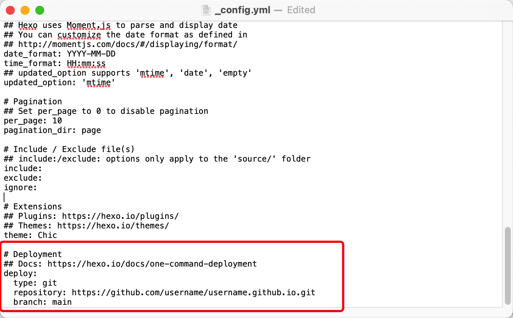
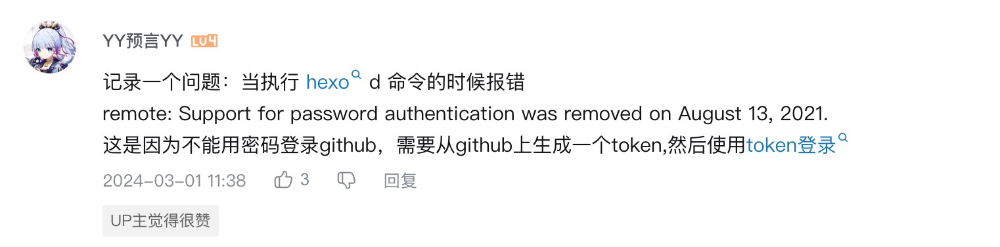

Hi guys :) ！！
大家好！欢迎来到我的博客。

这是我发布的第一个博客，感觉还是挺有意思的。
本来我是想找一个平台去发自己出去玩的一些图文的，感觉小红书就是一个很不错的地方，但是又有点不喜欢小红书那种照片划来划去的感觉，直到我在小红书刷到了一位广告人发的帖子博客复古潮和他的主页，我感觉这就是我一直想要的。但是身为学生党，又有一点囊中羞涩，其实就是不想交服务器的钱，所以在b站上检索了很久发现了一个借用github建个人主页的方法。于是乎，晚上吃完了饭就去了图书馆开干！在DID迪博主详细的教程下一个多小时就完成了建站，然后又一点点调整了主页里的一些细节。不过到了第二天，不知道为什么我的网址就报了 Your connection is not private 的错误，但好在使用流量还能打开，所以就先这样将就一下，等以后有了时间再去解决。
如何建站
闲扯了这么多，那就趁着记忆还是热的时候赶快写一些建站的教程吧。我感觉我以后可能还会把这些都推到了重新做一版（因为现在的网页感觉有好多小毛病）。
下载Git， Node.js
首先就是需要把几个比较基本的东西安装一下：
可能是因为我用的是mac，它自己自带了git，所以可以不用安装。但是还需要去绑定github的账户。打开终端Terminal：
1 | git config --global user.name "Name" |
对于Node.js，我用的Homebrew下载，在Terminal里用指令直接就可以下载和安装，非常傻瓜。
1 | brew install Node.js #具体的指令要去查homebrew的文档 |
安装完成以后，可以用下面的指令去检查是否安装成功：
1 | git version |
安装Hexo
1 | npm install -g hexo-cli |
绑定SSH
1 | ssh-keygen -t rsa -C "email address" |
然后一直回车或者回复y，过了一会儿会告诉你正确生成以后。你可以在根目录上找到一个叫‘.ssh’的文件。可能是因为我用的是mac系统，这个文件夹被隐藏了，所以从Finder上找不到，那我们可以用指令把key复制出来。
1 | pbcopy < ~/.ssh/id_rsa.pub |
复制好了以后到github上setting里面找到ssh keys绑定进去。
可以用下面的指令去检查绑定是否成功。
1 | ssh -T git@github.com |
Hexo搭建
当你把之前都料理妥当了以后，我们就可以开始做大菜了。
首先在一个你想的地方建立一个文件夹，我命名的‘Blog’，右击，有一个在此文件打开终端，然后你后续的指令都是建立在这个文件夹里的内容了。
初始化hexo（在此步骤的时候文件夹一定要是空的）。
1 | hexo init |
生成界面
1 | hexo g |
在本地建立预览
1 | hexo s |
这时候通常回返回一个网址 http://localhost:4000/， 你只需要点开就能看到你的网站现在是什么样子的啦。
在上传到GitHub之前，还需要安装一个hexo上传git的工具。
1 | npm install hexo-deployer-git --save |
然后在Blog文件中找一个叫_config.yml的文件在最后把上传的地址更新一下。

1 | deploy: |
上传到github。
1 | hexo d |
这样关于网站的信息就会用git上传到github上，github收到了以后就会自己收拾收拾把你的网站赶上架了，不要一般需要等一会儿。
对了，如果第一次上传的时候中间可能会问你要你Github的username和password。我直接输了我记得用户名和密码并不能通过验证，然后我不知道在哪里的评论区里看到需要在github里申请一个token就可以了。
然后你就可以在 username.github.io上看到你自己的网站了。
更新
每一次绑定github以后，会有一个有效期，过了有效期之后就需要重新绑定。在再次绑定的过程中，Terminal有时会显示输入密码，此时的密码并不是github账户的密码，其实是需要在github上申请一个密码。
具体位置：在GitHub-setting-developer setting- Personal access token

增加页面
当想给主页增加一个新的页面的时候，只需要输入
1 | hexo new "文件名" |
插件安装
PDF显示
安装插件
1 | npm install --save hexo-pdf |
安装完成以后，在markdown中在要加pdf的地方添加
1 | {% pdf "name-of-pdf.pdf" %} |
我在文章中是想要做成和canvas 一样的效果，就是点一下可以展开。
1 |
|
效果: